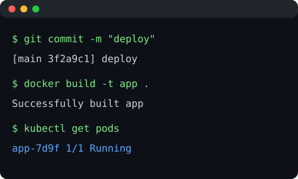

Git
Sistema de controle de versão. Guarda o histórico do código, permite voltar no tempo e trabalhar em equipe usando branches. Costuma ser usado junto com GitHub ou GitLab.

Comecei o estágio de DevOps sem ter muito conhecimento e acredito que, para as próximas pessoas que passarem pela mesma experiência, ter um site objetivo e fácil de entender, que mostre os comandos do dia a dia, vai facilitar bastante. Por isso decidi criar este site e aproveitar para este trabalho da escola, que também me ajuda a estudar front-end (HTML, CSS e JavaScript) e a entender melhor o meu trabalho de DevOps, no back-end.
Na página de comandos, use a busca ou os botões de filtro e clique em "Copiar" para levar o comando ao seu terminal. O botão de tema alterna entre claro e escuro.
Uma explicação rápida de cada ferramenta que aparece no guia:
Sistema de controle de versão. Guarda o histórico do código, permite voltar no tempo e trabalhar em equipe usando branches. Costuma ser usado junto com GitHub ou GitLab.
Empacota a aplicação com tudo que ela precisa (código, bibliotecas, configurações) em um container, que roda igual em qualquer máquina.
Sistema operacional presente na maioria dos servidores. No dia a dia de DevOps, o terminal Linux é a principal ferramenta de trabalho.
Orquestrador de containers. Gerencia vários containers em vários servidores: sobe, escala e reinicia as aplicações automaticamente.